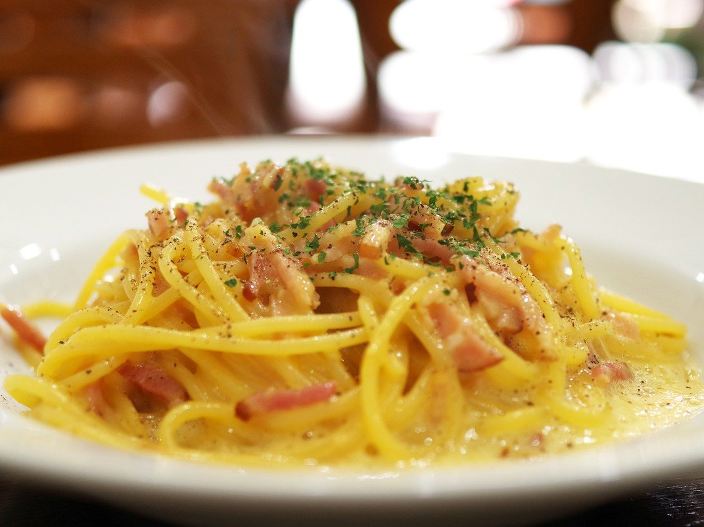

Carbonara is one of the few dishes I've mastered to the point where I can make it without exact measurements. My approach can be described in one word: arrogance. I'm so sure I'll get perfect 10s with my carbonara that my mannerisms when preparing the dish have an air of arrogance to them. All of this to say, there's no way I'm getting it wrong. One simple reason I like it is how simple and comforting the dish is while still tasting delicious.

Spaghetti Carbonara is an Italian main course consisting of Spaghetti with bacon and a creamy sauce made from eggs, cheese and pepper.
It takes the same amount of time to prepare as it does to cook the pasta.
Ingredients are simple: spaghetti (or long pasta), pancetta or bacon, eggs, Parmesan (cheese), a little olive oil, salt, and pepper.